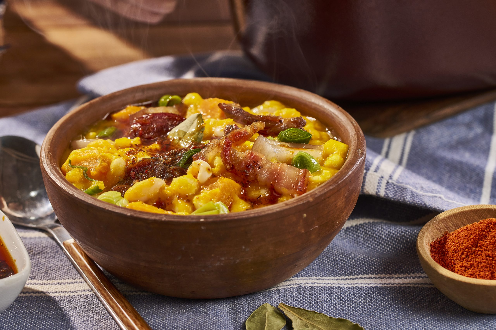

Bienvenidos
Simple, auténtico y hecho con el corazón
En ADOBE creemos que la buena comida no es tan simple como parece. Detrás de cada plato hay ingredientes de calidad, recetas caseras heredadas a lo largo de los años y un camino lleno de prueba y error.
Te invitamos a disfrutar de una experiencia tranquila, lejos del ruido de la ciudad, y convertir cada visita en un momento especial.

Reservá tu mesa
Completá el formulario o escribinos por WhatsApp para coordinar tu visita.
Consultanos disponibilidad, horarios o cualquier duda antes de venir.
Escribir por WhatsAppContacto
Teléfono
+54 351 1234567
info@adobe.com
Ubicación
Falda del Carmen, Córdoba